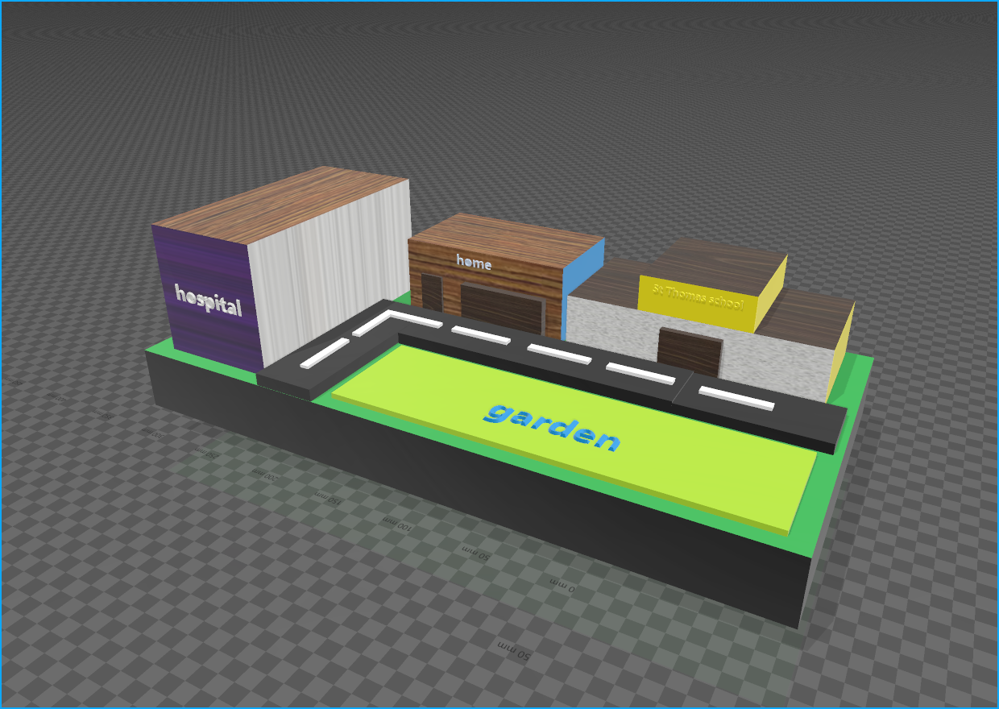

What is a Smart City?
A smart city uses information and communication technology (ICT) to enhance operational efficiency, share information with the public, and improve the quality of government services and citizen welfare.

Uses of Smart City Technology
- Traffic Management
- Waste Management
- Energy Management
- Public Safety and Security
- Environmental Monitoring
- Smart Healthcare Services
- Smart Education Systems
Needs for Smart City Development
- Infrastructure Investment
- Public-Private Partnerships
- Data Privacy and Security Measures
- Citizen Engagement and Participation
- Technological Innovation and Research
- Regulatory Frameworks
Importance of Smart Cities
- Enhances Quality of Life for Residents
- Promotes Sustainable Urban Development
- Improves Economic Growth and Job Creation
- Increases Efficiency in Resource Management
- Facilitates Better Public Services
- Addresses Urban Challenges like Traffic Congestion and Pollution
What is Arduino?
Arduino is an open-source electronics platform based on easy-to-use hardware and software. It's designed for anyone making interactive projects.


Components of Arduino Board
- Microcontroller: The brain of the Arduino board.
- Digital I/O Pins: Used to connect various components.
- Analog Input Pins: Used to read analog signals.
- Power Supply: Provides power to the board and connected components.

Interactive Practicals
Try simulating a simple LED blink program below: